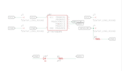
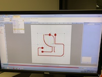
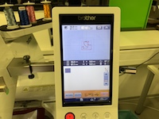
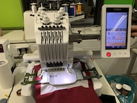
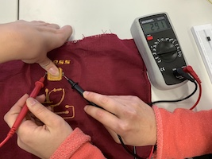

SENSORS IN WEARABLES
23 November 2018
Description of the process:
- Design the circuit that is going to be in the weareable using "Eagle", taking into account where the bateries should be, the sensor and the outputs. Safe the file in DXF.

- Open the DXF file in Illustrator and adjust the lines adn thickness. Safe the file as Windows Metafile

- Open the Windows Metafile in "PE-Design Next", to prepare the circuit for the embrodering machine. Transfer the file into an USB stick.
- Open the file in the embrodering machine. In the machine, the top thread is normal colored one, but the botton one is a conductive thread. Prepare the support with the paper and the right tension and place it in the machine. Choose the settings and put it to work.


- This is the result. Due to the conductive threat was under the machine, the conductive part of the circuit is on the back. Clean the circuit from unuseful threads to make it saver.


- For the sensor, the design with the shape and the word is done in Illustrator and then, once again, transfered to "PE-Design Next", this time we should tell the software we want to make an applique for the sensor.

- For the sensor, we have the following materials: non conductive fabric for the top, alreadty cut using the laser cutter, conductive fabric, antistetic foam, wich is semi conductive, conductive fabric, and non conductive fabric, which in this case it will be the base.
- Open the file in the machine and place the materials for doing the applique.
- Once the applique is done, embroder the text. This is the result of the circuit and the sensor on fabric.


- Now it is needed to prove that the pressure sensor works, using a multimeter and looking at the values when it is not pressured and when it is. The resistance decreases when the sensor is pressed so it is working properly.

- For programing the sensor, we conect it with aligator clips to the Arduino and the Arduino is conected to the software in the computer, where we introduce the code.

- In order to prove that it works, we conect a LED light and see if it turns on when the presure sensor is pressed.
- After prove that it works, we transfer the code to Arduino to Attiny, which will be placed in the circuit.
- Saw manually the two sides of the sensor to the circuit, using conductive thread.
- Saw the LED board, which was previously designed in Eagle and done in the millimachine.
- Make a pocket for the batteries. The circuit will only work if the conductive fabric on top is touching the battery.
- Sold the resistor and the Attiny to the circuit.
- Close the battery pocket in order to make the conection, and press the sensor in order to see if it works.
- It is working! (the LED is very small)